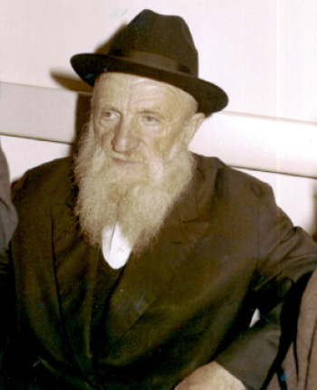

The Chassid Who Taught in a Soviet Military Academy
Many Lubavitchers knew the Chassid, R’ Tzvi Hirsch Lerner. For many years, he lived a difficult life of mesirus nefesh for Torah, mitzvos and Chassidus. * His granddaughter shares stories and memories, suffused with Chassidic flavor, about his outstanding character. * Part 1
ROOTS

R’ Shmaryahu’s wife, Zelda, was a goodhearted woman who greatly esteemed Torah scholars and made great efforts in her mitzva observance. They also had a dairy cow. Every morning they would milk the cow and she would take the cream to a “guter Yid” [Polish Chassidic holy Jew] by the name of R’ Chaim’l.
R’ Shmaryahu was drafted in World War I, but he was severely wounded in the knee by a direct hit. He suffered great pain ever since, but his soul and spirit remained strong. After being injured he was released from army service.
In the family there were three brothers and one sister. Two died and one perished in the Holocaust.
HIS YOUTH
His parents sent young Hirschel to Kamenets-Podolsk to study, because this city had a Jewish environment. He lived with relatives, Uncle Shlomo and Aunt Tzippora, who were Chortkov Chassidim. He enjoyed the Jewish life there.
R’ Shmaryahu’s position as a government employee gave his children the right to study a profession (a right that was denied in those days to independent businessmen). Hirschel, who was a talented boy, was accepted in a workers college where he completed his studies in mathematics.
JEWISH PRIDE
After the Bolshevik Revolution, he taught for a short time in Kamenets-Podolsk. The fact that he was a Shomer Shabbos Jew was a subject of mockery among the students. They would say: Comrade Lerner, your mother already made kugel for Shabbos.
Later on, in 5692/1932, the persecution of Judaism intensified. The Yevsektzia zealously pursued religious Jews. Some Jews wanted to curry favor with the government and they would report far more than what was requested of them. They oppressed religious Jews more and more, to the point that they began dogging every step of any Jew who did not fall into line.
Those young Yevsekis were jealous of Hirschel who successfully taught math and physics and still went to daven with a minyan, kept Shabbos, and attended Chassidic farbrengens (most of which took place in his uncle’s home).
After being caught by these youth at farbrengens, he left the town and moved somewhere else, a few hundred kilometers away. He kept changing his places of work: Proskurov, Dunayevtsy, Shamaryevka and others. In each place, he did his work well until the young Yevsekis figured out that he was religious. Then he had to change locations again.
One day, he found out that in the military academy in Moscow they were lacking math and physics teachers on a high level. Although he had been trained to teach lower levels, he prepared himself and was accepted as a teacher in this institution. His main reason for applying for this job was because there were no Yevsekis there. He knew that he would be able to observe mitzvos more peacefully.
This academy was meant for officers of various branches of the Soviet army. The Soviet army had just been formed and the government did not want to maintain the personnel who had served previously in the Czar’s army or the army of the bourgeoisie. They claimed that these people would not be suited to teaching and educating young officers. They wanted to hire teachers and educators from the younger generation who came from families of the proletariat and farmers.
R’ Shmarya, Hirschel’s father, was considered to be in this category. This, along with the proficiency that Hirschel demonstrated in the entrance exams, satisfied those in charge. He was accepted on his terms. His main condition was not having to lecture on Fridays and Shabbos. When he asked for a two-day break, this lessened the suspicion of his being Shomer Shabbos. This way, he was able to take advantage of Fridays off to get to where a minyan or a farbrengen were held on Shabbos.
R’ Hirschel was a very gifted teacher. He had an unusual ability to explain things and to deconstruct complicated topics. He was greatly admired and beloved by his students who later became army officers, some of them in the upper echelons.
A NIGHT IN THE FOREST WITH WILD ANIMALS
Every week, after finishing work on Thursday, he would go to the station deep in the forest where a train called “the Kokoschka” made a stop. It stopped for only one minute. He would ride this train throughout the night, and on Friday he would reach his destination where he was able to spend Shabbos properly. On Sunday, he did the same in reverse, and on Monday he was back at work.
He once missed the train. It was late and he knew he would not able to make it back to the academy while it was still light. He had to remain in the forest. At night was when all the wild animals emerged from their lairs and roamed the forest. It was quite dangerous to be there at night. R’ Hirschel had to climb a tall tree and all night he lit matches that he always had with him (even though he never smoked) to ward off the animals. Every time the fire went out, the animals came back to gather round him. Then he’d light the next match. On Friday, when the train passed by again, he boarded it and was able to reach his destination a few hours before Shabbos.
CONCERN FOR OTHERS
After the Bolshevik Revolution, all private property was nationalized and became the property of “Mother Russia.” But when the entire economy of Russia collapsed, the communists decided to take a new approach and allow people to open small businesses. With this policy, they gave workers certain benefits.
My grandfather’s family belonged to the workers class and so they received a permit to run a small grocery store. This store was a center for Jewish activities and distributing food to the needy, a place for gathering and learning and many other things that took place under the guise of selling food.
Despite the advanced education that R’ Hirschel acquired and his involvement in the broader society, he always sought the company of Torah scholars, Chassidim, farbrengens and a Chassidic atmosphere.
In 1933 there was a terrible, government-imposed famine in the Ukraine in which people died in the streets, swollen from starvation. R’ Hirschel, who worked in Moscow at the time, would buy bread and send it to the Ukraine.
In 1934, he moved in order to study in Kiev where he completed his university degree. He was talented in many areas, particularly in accounting and math.
MARRIAGE
At a certain point, those young Yevsekis who operated against their fellow Jews in the service of the government fell prey to that same government. Many were arrested and sent to jail or exile. R’ Hirschel felt the time was right to return to his parents’ home and the normal routine of life which he so desired.
The financial situation at home was respectable. His grandmother Zelda worked as a bookkeeper in a factory that manufactured alcohol. From this factory they took the remains of the wheat which was good for animal fodder and they fed their cow.
When he returned home, he met with Yitzchok Cohen (Kagan), a man with a Chassidic soul. He knew Hirschel from when he was a young bachur in Kamenets-Podolsk, where he saw him attending farbrengens. At that time, it was a rare sight to see a young, intelligent bachur who treated matters of k’dusha with such seriousness. He was also taken by Hirschel’s good heart and he wanted him as his son-in-law.
Now that Hirschel was back at home, the shidduch could take place. The father of the kalla, R’ Yitzchok, exclaimed in a voice filled with emotion and appreciation for his new son-in-law the verse, “My daughter I have given to a man.”
In 1935, R’ Yitzchok and his wife Shifra planned to travel to Eretz Yisroel, since they were among the fortunate ones who received exit visas. What happened was this:
At that time, the president of Russia, Kalinin, would appear on the street and people would go over to him and ask for visas. There were a few that he would grant. On one of these occasions, he met R’ Yitzchok to whom he took a liking, and he gave him a visa.
The young couple was supposed to join the kalla’s parents for the trip to Eretz Yisroel. They waited for certificates for a long time but they did not arrive. In the end, this delay was a blessing. This was because the family members who managed to reach Eretz Yisroel were influenced by the Zionist spirit that prevailed at the time and distanced themselves from their traditions.
As they waited for their visas, Hirschel worked as a teacher. Since he earned starvation wages, he had to supplement his income in other ways, usually on the black market. Only four months after he married, he was caught in illegal trading of gold bars and was sentenced to seven years imprisonment.
To be continued, G-d willing
Beis Moshiach (staff). "The Chassid Who Taught in a Soviet Military Academy." Beis Moshiach, no. 906 (December 9, 2013).